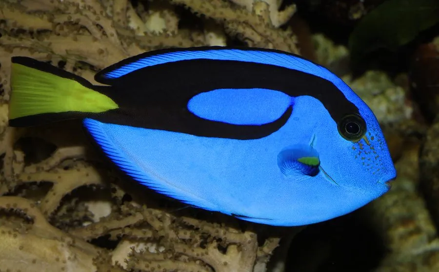

鱼类 · 动物界
蓝唐王鱼 Paracanthurus hepatus

通体宝蓝、尾鳍鲜黄的热带珊瑚礁鱼，尾柄侧有锋利的骨质刺，因电影《海底总动员》中的“多莉”而闻名。
- 分类
- 门脊索动物门纲硬骨鱼纲目鲈形目科刺尾鱼科属副刺尾鱼属
- 栖息环境
- 热带珊瑚礁区的中上层水体，常活动于礁缘和潮流经过处
- 地理分布
- 印度洋至太平洋热带海域，从东非、东南亚到日本南部、澳大利亚大堡礁，中国南海及台湾周边可见
- 保护级别
- IUCN 无危（LC）；中国未列入国家重点保护野生动物名录
物种志
蓝唐王鱼体呈椭圆形、侧扁，通体宝蓝色，体侧上半部有一条黑色弧形宽带从眼后延伸到尾柄，尾鳍为鲜艳的黄色，上下缘镶黑边。尾柄两侧各有一枚白色、像小手术刀一样可以折叠的骨质刺，危急时能竖起自卫，这也是刺尾鱼科名称的由来。成鱼体长一般 15–25 cm，最大约 30 cm，雌鱼通常比雄鱼略大。
蓝唐王鱼分布在印度洋至太平洋的热带珊瑚礁，从东非、东南亚到大堡礁、日本南部和新喀里多尼亚，中国南海和台湾周边也有记录，多在水深 1–40 m 的礁区上层活动。它以浮游动物为主食，也取食藻类，常成群在潮流中张口捕食；受惊时会迅速躲进珊瑚枝杈之间。繁殖时雌鱼把卵产入水中，卵随洋流漂浮，幼鱼在开阔水域度过一段漂浮生活后才回到礁区。它是水族贸易中的高需求物种，人工繁殖难度较大，野外种群目前尚属稳定，IUCN 将其评为无危。
形态与习性
- 食性以浮游动物为主，也取食藻类
- 体长一般 15–25 cm，最大约 30 cm
- 防御尾柄两侧各有一枚可折叠的骨质刺，危急时竖起自卫
- 繁殖产卵后卵粒随洋流漂浮，幼鱼在开阔水域成长
- 栖息深度珊瑚礁区水深 1–40 m
- 性情多单独或小群活动，受惊时躲进珊瑚枝杈
趣味知识
- “蓝唐王鱼”尾柄两侧的骨质刺像小手术刀，是刺尾鱼科得名的原因。
- 它在英文中被称为“蓝倒吊”，因为游泳时身体会随水流倾斜，像吊在礁石上。
- 电影《海底总动员》中的“多莉”就是这种鱼，上映后水族贸易需求大增。